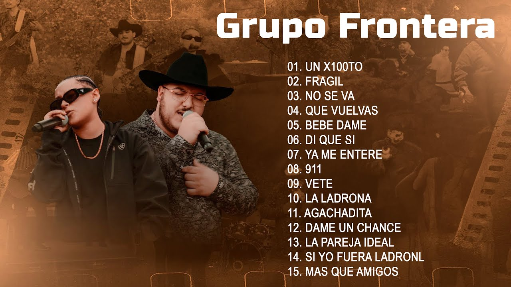

Conoce a Grupo Frontera

Video musical
Historia
Grupo Frontera es una banda musical estadounidense formada en Edinburg, Texas, en 2022. Grupo Frontera tiene el hit del año: "Un x100to", una cumbia romántica mexicana que rápidamente se convirtió en un éxito radial,como se solía decir en los años 90. El sencillo cuenta con la participación de la megaestrella (29), quien, pese a su carrera en el reggaetón, dejó en claro la pasión que siente por la música regional mexicana. El grupo liderado por la reconfortable voz de "Payo" (20) se prepara para su primera gira latinoamericana que los traerá por primera vez al Luna Park. ¿Cuándo? El próximo 26 de julio. Con menos de un año de popularidad masiva, Grupo Frontera llegó para instalarse, como lo hicieron en su momento Los Ángeles Azules. La agrupación se dio a conocer en noviembre 2022 a través de TikTok gracias al cover de la canción 'No se va', de la banda colombiana Morat. Beto, Juan Javier Cantú, Carlos Frontera, Payo, Julián Peña Jr. y Carlos Zamora, son sus jóvenes integrantes, que viven este momento como si fuera un sueño. Acaban de recibir un premio Latin American Music Awards en la categoría de Mejor Canción Regional Mexicana del año por 'No Se Va' y
Se especializan en música regional mexicana, especialmente en la música norteña y la cumbia norteña. Alcanzaron reconocimiento internacional después de interpretar la canción "No se va", de Morat.
Características musicales
- Género: regional mexicano, música norteña y cumbia norteña.
- Instrumentos: acordeón, bajo eléctrico, batería, bajo quinto y percusiones.
- Ritmo: combinan ritmos bailables con melodías románticas.
- Letras: hablan de amor, desamor, rupturas y sentimientos.
- Colaboraciones: trabajan con artistas del regional mexicano, el pop y otros géneros.